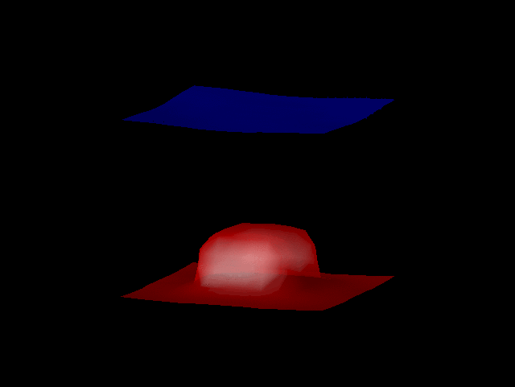
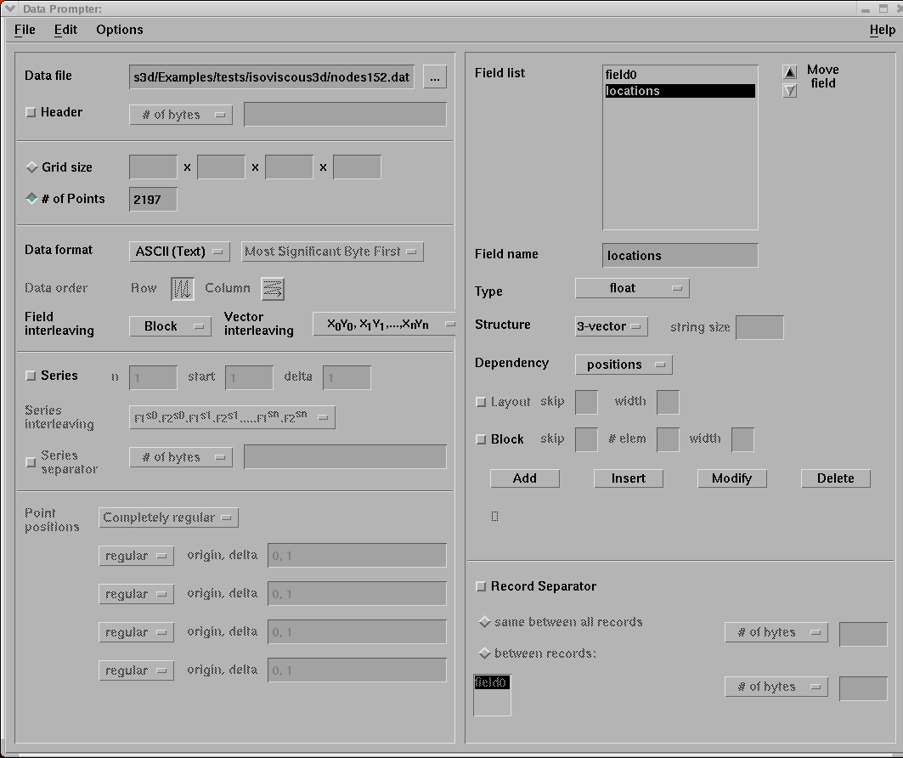

3D plots with opendx:

To make the above plot(s) with opendx, we first have to import the data. Lets say our data input file is of the format:
x,y,z, data
(Note: for ellipsis data, a simple perl script can put it in this format).
To plot this, first run opendx. This brings up a control panel that lets you decide what to do next. Select "Import data."

This brings up a Data Prompter. For our case, we want to define the datapoint locations, so select
"Grid or scattered file" then clicking on the scattered grid button. We
have one variable, so that's ok. Our positions are defined in our data
file, so we hit this button. Next click "Describe data". This brings up
the screen below:

Here
we enter the name of the datafile we want to import, and if you have a
header you can tell it to skip so many lines. Now we don't want to
define the grid, since this causes opendx to loop through the datafile
its own way, ignoring our locations and defining its own wrong
positions. Just set the number of datapoints you have (if you're not
sure, type
> vi datafile
in the terminal and read how many lines you have. The make sure its
reading your data and locations in the right order (top right). Save
this setup, and you will have created a .general file, which is then
what you tell opendx to import in your program. (This is just a header
file that desccribes your datafile and format).
You may have noticed when you first started opendx that you had an option to "Edit visual programs." Click on this now.

This is a flowchart representing the sequence of modules that made the
above image(s). Make sure that the "All" option under Categories is
selected. The modules are then listed in the bottom left menu in
alphabetical order. Click on them, and then on the workspace to put
them in the program. You join them by clicking on the tabs, and
dragging to another module. Ok, what do they do. The first one
"FileSelector" you use to select your .general file you made before (to
open it, double click). You connect this then to the import module,
which imports your data. The AutoGlyphs module creates little pictures
(spheres or diamonds or arrows, if its a vector) at each data point,
which you can then plot up (via AutoColor and the to Image). You will
notice this is not connected; we haven't plotted this glyphs in the
above image. From Import, we can also send the data to AutoGrid, which
is a black-box gridding function. We the send the data to two different
Isosurfaces: one to contour the hotstuff, one the cold (blue). We
colour these differently also. We then Collect these streams (twice:
note the second one is redundant in this example) - then we send it to
Image. Select from the menu Execute-> Execute Once. This will run
the program and create an image, which you can then save as you
favourite image format (as long as your favourite's tiff. Or ps).
Back to 3D convection
Back to home